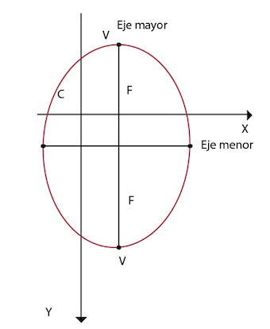

Definición
Es el lugar geométrico del conjunto de puntos en el plano cuya suma de las distancias
a dos puntos fijos (FOCOS) es constante.
(Representación a la cual hace referencia: verbal).
(Representación a la cual hace referencia: Gráfica)
En donde:
a es igual a la distancia del centro al vértice del eje mayor.
b es igual a la distancia del centro al vértice del eje menor.
c es igual a la distancia del centro a cualquiera de los puntos fijos o focos.
Este lugar geométrico se puede comprobar experimentalmente empleando una cuerda sujeta a dos puntos fijos y un lápiz;
el trazo corresponderá a una elipse.
Elementos de la Elipse
Eje mayor:
Es la recta donde se localizan los vértices y los focos.
La longitud del eje mayor se define como dos veces la distancia del centro al vértice (2 a).
Eje menor:
Es la recta que no contiene al foco ni al vértice.
La longitud del eje menor se define como dos veces la distancia del centro
hacia cualquiera de los puntos del vértice del eje menor (2b).
Centro:
Es un punto del eje mayor, y está situado a la mitad de los vértices.
Vértice:
Puntos donde toca la elipse al eje mayor.
Lado recto:
Es un segmento de recta perpendicular al eje y que
pasa por los focos y tiene como extremos los lados de la elipse y su longitud es:
Excentricidad:
Es el cociente de la distancia entre los focos
a la distancia entre los vértices; está sólo se encuentra entre cero y uno.
La excentricidad determina la forma de la elipse, entre más cerca de uno se encuentre,
la forma de la elipse será alargada, y si, por el contrario más cerca de cero está,
su forma es más redonda.
Ecuaciones
Ecuaciones con centro en el origen
(Representación a la cual hace referencia: simbólica)
Gráfica No. 1
(Representación a la cual hace referencia: Gráfica)
(Representación a la cual hace referencia: simbólica)
Gráfica No. 2
(Representación a la cual hace referencia: Gráfica)
Ecuaciones con centro (h, k) fuera del origen
Gráfica No. 1
(Representación a la cual hace referencia: Gráfica)
(Representación a la cual hace referencia: simbólica)
Gráfica No. 2

(Representación a la cual hace referencia: Gráfica)
(Representación a la cual hace referencia: simbólica)